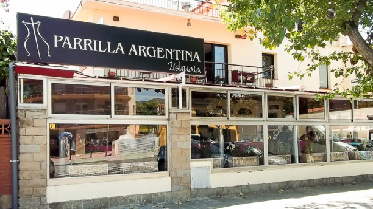
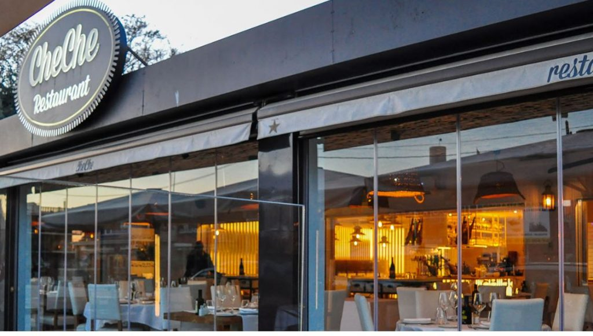
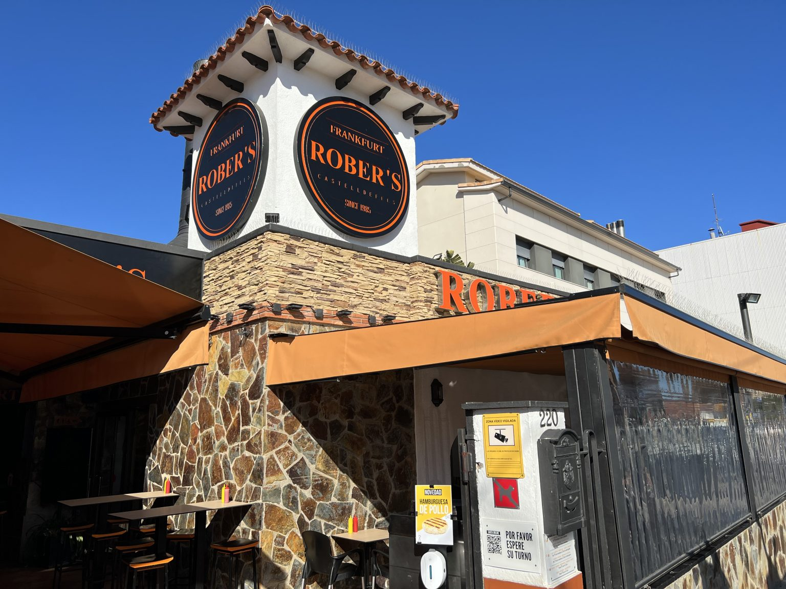

Castelldefels es un municipio de la provincia española de Barcelona, en la comunidad autónoma de Cataluña. Perteneciente a la comarca del Bajo Llobregat, tiene una población de 67 307 habitantes
Castelldefels no cuenta, de momento, con restos muy antiguos de presencia humana, pero sí en sus cercanías. En agosto de 2005 se recuperaron herramientas de piedra del Paleolítico inferior en el parque de Vallparadís (Tarrasa, Barcelona) de un millón de años de antigüedad aproximadamente.
También se han encontrado en Castelldefels restos de la Edad del Bronce (2000-800 a. C.)
Hasta el siglo xx no tuvo una auténtica estructura urbana. Con el desarrollo económico de la ciudad de Barcelona y la popularización del automóvil, Castelldefels se convirtió en lugar de veraneo de muchos barceloneses a mediados de los años 1950.
Leer másEl Canal Olímpico de Cataluña es un canal artificial de 1.200 metros de longitud, 130 metros de ancho, y 4 metros de profundidad.
Fue creado con motivo de los juegos olímpicos de Barcelona de 1992 como sede de las competiciones de Piragüismo.
Ver actividades y horariosSanta Maria de Castelldefels es una iglesia del municipio de Castelldefels
Fue incendiada en 1936 hecho que hizo que fuera empleada como mercado público. En 1948 se inicia su reconstrucción, llevada a cabo por el arquitecto Nil Tusquets.
El Castillo de Castelldefels se alza en el punto más alto de una colina de 59 metros de altura sobre el nivel del mar.
Se levantó sobre lo que en su día fue un poblado ibérico, dando paso a la construcción del castillo en el siglo XVI.
Consultar HorariosEntrañas asadas, empanadas, provoleta y otros platos típicos argentinos en un sobrio restaurante con terraza.
Paso Maritimo, 237, 08860, Castelldefels (Barcelona) Tapas elaboradas y platos de pescado, marisco y arroz en un restaurante refinado con cocina a la vista.
Paseo Maritimo 280, 08860, Castelldefels (Barcelona) Restaurante informal, con terraza, que ofrece salchichas al estilo alemán, perritos calientes, hamburguesas,...
Passeig Marítim, 218, 220, 08860 Castelldefels, Barcelona 